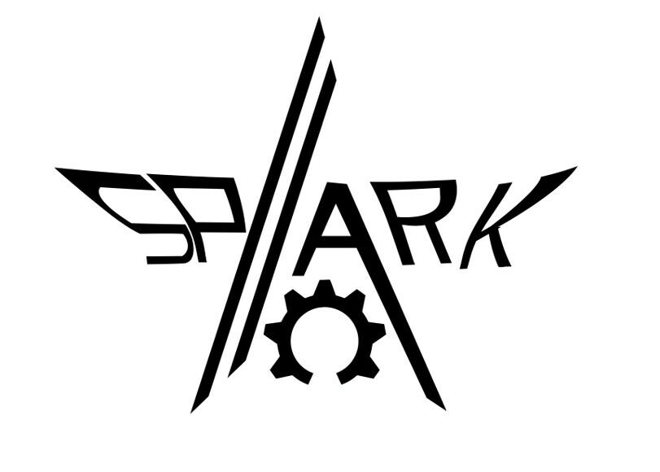

2015-2021: Allspark
千里战队真正意义上的前身，是于 2015 赛季开始正式参加机甲大师 RoboMaster 比赛的 Allspark 战队。 此后在 2019 和 2020 赛季，战队发生过一次较为严重的断代。由于人员流失和管理变动，队伍没能做好传承工作， 导致 2021 赛季伊始需要重新从零开始构建一支目标为参加超级对抗赛的队伍。 我们将这支 Allspark 战队重新开始筚路蓝缕的2021年视为队伍最近一次断代重启并延续至今的元年，现如今很多 重要人员的延续和其工作的沿革可以追溯到2021 和 2022 两个过渡赛季。
